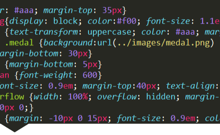
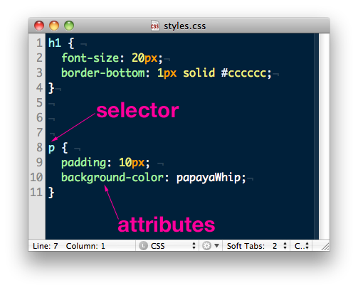

Bienvenido a mi Página
En esta seccion colocaremos ejemplos con imagenes y una breve descripcion sobre los principales selectores y propiedades basicas de css
-

Selectores: Introducción a los selectores de tipo, de clase y de ID.
-

Propiedades: Conceptos básicos como color, font-size, margin, padding, background-color, entre otros.
-

Valores: Comprender los valores que pueden tomar las propiedades y cómo afectan el estilo de un elemento.
Acerca de css
CSS (Cascading Style Sheets) es un lenguaje de estilo utilizado para definir la presentación y el diseño de documentos HTML y XML. Permite controlar aspectos visuales como el color, la tipografía, el espaciado y la disposición de los elementos en una página web. CSS se utiliza para mejorar la apariencia y la usabilidad de los sitios web, proporcionando una separación clara entre el contenido y el diseño, lo que facilita el mantenimiento y la actualización de los sitios web. Es esencial en el desarrollo web moderno para crear diseños atractivos y funcionales.
Principales Funciones
- Estilizar la presentación
- Controlar la disposición y el diseño
- Crear efectos visuales y animaciones
Conclusion del Porque integrar estos conocimientos
Integrar conocimientos de CSS en el mercado laboral es esencial para: Mejorar la presentación y usabilidad de los productos web, lo que puede aumentar la satisfacción del cliente y la retención de usuarios. Permite adaptarse a las últimas tendencias de diseño y tecnologías web. Puede abrir oportunidades laborales y aumentar la empleabilidad en el campo del desarrollo y diseño web. Ayuda a optimizar los procesos de trabajo y colaboración entre equipos multidisciplinarios, al facilitar la comunicación y comprensión de los aspectos visuales de un proyecto.